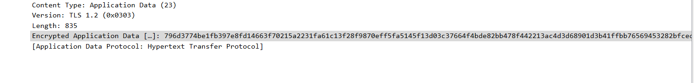
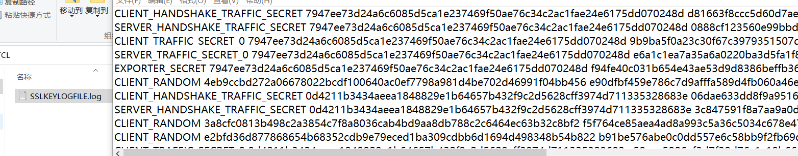
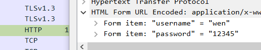

wireshark抓包
wireshark 是一个功能强大的抓包软件。
与 bp 抓包相比，它能抓取 arp、udp、DNS 等多种包。
功能演示
对于一个网页来说，登录密码一般都是经过加密传输，这里以 TLS 加密为例。
找到一个网站
我们随便找到一个网址，F12 查看网址，然后用 wireshark 过滤抓包，结果发现密码和账号是加密的。
1

解密处理
TLS 解密需要我们在客户端配置密钥来解密，这边已经配置完成。
2

这边可以看到 TLS 包被解析成了 http 包，并且密码和账号都能看到。
3
